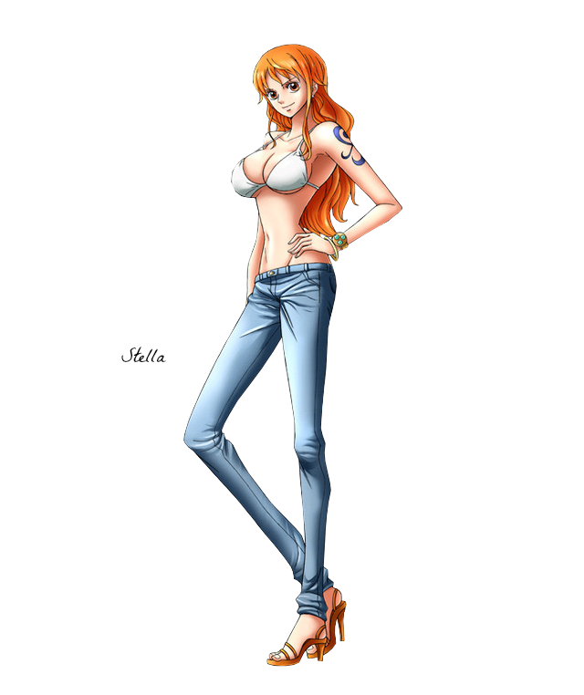
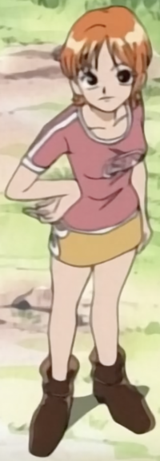
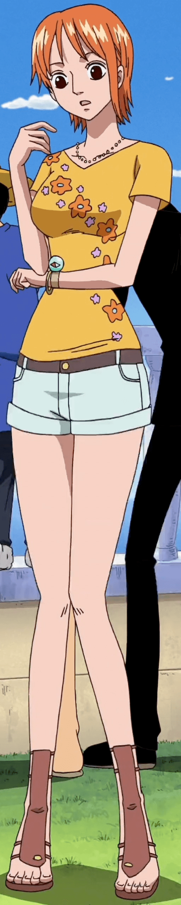

Nami
Navigator of The Straw Hat Pirates
ABOUT
"Cat Burglar" Nami is the navigator of the Straw Hat Pirates. She is the third member of the crew and the second to join, doing so during the Orange Town Arc. She is the adoptive sister of Nojiko after the two were orphaned and taken in by Bell-mère.
She was formerly a member of the Arlong Pirates and initially joined the Straw Hats so that she could rob them in order to buy back her village from Arlong. However, she legitimately joined the Straw Hats after they rebelled against and defeated Arlong. Her dream is to make a map of the entire world.
Age
20
Date of Birth
July 3rd
Height
170 cm
Origin
East Blue
Nickname
"Cat Burglar" Nami
Bounty
 66,000,000.
66,000,000.Skill & Ability
Skilled Navigator & Negotiator
Bo Staff Fighter
Cartographer
Living Weapon Owner: Zeus
Thieving Expert
Weather Forecasting & Controller
Timeline
Nami Appearance
Nami is a slim young woman of average height with orange hair and brown eyes. Most people consider her to be very attractive or even beautiful. She has a black tattoo (blue in the anime) on her left shoulder, which represents mikan, and pinwheels (a homage to Bell-mère, Nojiko, and Genzo, respectively), where she used to have a tattoo for being a member of Arlong's crew.
Her overall physique matures slowly throughout the series and then suddenly during the timeskip (though this is most likely a simple change in style of artwork). Her fashion frequently changes as does her hair style. Many of her shirts feature four-letter words, such as "Gold" or "EVIL", similar to a shirt that Bell-mère once wore that had "MACE" on it. On her left wrist, she wears the Log Pose, which she needs in order to be the navigator of the ship, and a gold bracelet, given to her by her sister, Nojiko. After the Arlong Park Arc, Nami frequently changes into a variety of clothes in the series for each arc, and usually pairs her tops with skirts that have two rings on the sides. Her trademark shoes are orange high-heeled gladiator sandals. Nami wears some form of high heels in every arc, and while they do make her taller, they do not seem to affect the way she walks or her speed. Though she tends to style her hair neatly, occasionally, a hair on top of her head may form into a messy cowlick.
She wears a strap around her thigh with three slots in it which she keeps each pole of her bo staff and later the Clima-Tact in.
Her overall physique matures slowly throughout the series and then suddenly during the timeskip (though this is most likely a simple change in style of artwork). Her fashion frequently changes as does her hair style. Many of her shirts feature four-letter words, such as "Gold" or "EVIL", similar to a shirt that Bell-mère once wore that had "MACE" on it. On her left wrist, she wears the Log Pose, which she needs in order to be the navigator of the ship, and a gold bracelet, given to her by her sister, Nojiko. After the Arlong Park Arc, Nami frequently changes into a variety of clothes in the series for each arc, and usually pairs her tops with skirts that have two rings on the sides. Her trademark shoes are orange high-heeled gladiator sandals. Nami wears some form of high heels in every arc, and while they do make her taller, they do not seem to affect the way she walks or her speed. Though she tends to style her hair neatly, occasionally, a hair on top of her head may form into a messy cowlick.
She wears a strap around her thigh with three slots in it which she keeps each pole of her bo staff and later the Clima-Tact in.
Before Timeskip

Before the Syrup Village Arc, Nami wore her trademark orange mini-skirt with two white rings on each side filled in with orange or brown in their centers and shirts with short sleeves that were long enough to hide her tattoo on her left shoulder that showed that she was a member of the Arlong Pirates. She also had short hair with a particularly curled strand over the left side of her face.
Romance Dawn Arc
Before Timeskip
During the Romance Dawn Arc to the Syrup Village Arc, Nami's initial trademark look consisted of a white and blue striped shirt, her trademark orange mini-skirt and brown high-heeled boots.
Baratie Arc

Before Timeskip
During the Baratie Arc, she wore a pink shirt with the letters "W" and a lowercase "B" in the center in a circle in white. The shirt has white liners and two lines along the sleeves. She also wore her yellow mini-skirt, and brown high-heeled boots.
Arlong Park Arc
Before Timeskip

During the Arlong Park Arc, Nami wore a green camisole with dark green flower shapes, tight black pants with two yellow rings on the sides, and light orange high-heeled sandals. Nami temporarily put on a glove to hide the fact she had stabbed her hand when pretending to murder Usopp, but quit wearing it once the truth was exposed. She also wore Monkey D. Luffy's straw hat for a while before it was later returned to him.

Loguetown Arc
Before Timeskip

She wore a plain navy blue, short-sleeved shirt, a dark blue mini-skirt with white rings on the sides, and navy blue high-heeled sandals.
Warship Island Arc & Reverse Mountain Arc
Before Timeskip

During the Warship Island Arc to the Reverse Mountain Arc, she wore a sleeveless baby blue shirt with a light heart in the center with a crisscross design, a dark blue mini-skirt, and her regular light brown high-heeled sandals. She also received a Log Pose from Crocus and began to wear it regularly on her left wrist, the same one with her gold bracelet.
Whisky Peak Arc
Before Timeskip

She wore a black shirt with the word "MODE" printed in the center in pink with the base in a pink mesh-like design, her regular yellow skirt and her high-heeled sandals.
Little Garden Arc
Before Timeskip

Throughout the Little Garden Arc, she wore a simple, long-sleeved shirt with blue sleeves, her yellow skirt, and her high-heeled sandals. After escaping Mr. 3's Giant Candle Service Set, her shirt was burnt and revealed a black, lacy brassiere underneath. She also wore Sanji's jacket to cover up, before changing on the Merry.
Drum Island Arc
Before Timeskip

During the Drum Island Arc, she wore several outfits. In the beginning, Nami wore a pale blue, short-sleeved cotton sweater, her yellow skirt and high-heeled sandals.


Arabasta Arc
Before Timeskip

During the Arabasta Arc, she wore white overalls to protect her skin while in the desert.


Jaya Arc
Before Timeskip

During the Jaya Arc, Nami wore a blue and white striped tank top with her usual skirt and high-heels.
Skypiea Arc
Before Timeskip

During the first part of the Skypiea Arc, while exploring Angel Beach and Upper Yard, she wore a bikini top that was designed in a cloud pattern colored in blue, light blue and white. She paired her top with maroon trousers, and went barefoot.


Long Ring Long Land Arc
Before Timeskip

Nami wore a black tank top revealing her navel with the word gold on it, she also wore white jeans with two rings on the side, a bracelet, and her regular high heels.
Water 7 Arc
Before Timeskip

During the Water 7 Arc, she sported two outfits. The first one was a dark blue, short-sleeved shirt with a light blue tie that had three rows of black dots decorated diagonally at the end. She complemented her top with a white pleated skirt with golden rings on the sides and dark blue high heel gladiator sandals.
.png)
Enies Lobby Arc
Before Timeskip

In the Enies Lobby Arc, she wore black high-heeled gladiator sandals, a brown cleavage-revealing blouse that exposes her abdomen with cream-colored liners and a pale blue, pleated mini-skirt. Initially, she also had on a blue denim jacket, but this was later caught and pierced by Kumadori's staff. This caused her to be pinned down, making Nami strip off the jacket and abandon it so she could run away.
Post-Enies Lobby Arc
Before Timeskip

Nami wore a yellow mini-dress with a hood and her default orange high-heeled sandals.
Thriller Bark Arc
Before Timeskip

During the Thriller Bark Arc, she sported many outfits. One of them was a pink, long-sleeved sweater with a white collar, a pleated brown mini-skirt, and brown high-heeled boots.

Sabaody Archipelago Arc
Before Timeskip

Nami wore an orange shirt with an orange floral pattern, white short shorts, and her high-heeled sandals. Nami's clothes consisted of a white shirt, jean shorts, and a pink high heels for the Straw Hat's Separation Serial.
After Timeskip
Nami Apperance
After Timeskip

From the Return to Sabaody Arc through the Fish-Man Island Arc, Nami's hair has grown rather long, which reaches her lower back. A single long hair stand hanging on the left side with bangs still hanging over her forehead. Her breasts have also grown much larger/rounder similar to Nico Robin's, but apart from this, her appearance has not changed much, save for the fact that both her body curves and hourglass figure have become more pronounced. Oddly, Nami's face is now drawn to look younger with her eyes bigger (with the irises now showing), droopier and placed lower on her face; though this may be from the art style evolving. She also has grown slightly taller. After the timeskip, her outfit consists of a revealing green and white bikini halter top, tight low-rider jeans (that expose a bit of her hips and rear), orange high-heeled sandals and a pair of pearl-like earrings that she constantly wears. Ever since arriving to the New World, Nami sports a new belt with a
symbol on it where she can also keep the pieces of her Sorcery Clima-Tact on the right side and puts the belt around her waist when she is fighting seriously against an opponent.
Punk Hazard Arc
After Timeskip

At the start of the Punk Hazard Arc, when they arrived in the New World, Nami changed into a red and yellow Criminal brand bikini top with the same pair of jeans, belt, and high-heeled sandals. She also tied her hair back again, and temporarily wore a pink raincoat while in stormy waters. When she reached the cold side of Punk Hazard, Sanji gave her his jacket to stay warm.


Dressrosa Arc
After Timeskip

During the Dressrosa Arc, Nami's first outfit consists of a tank top and short shorts. Later, while playing a shogun scene on the Sunny, she wears a bikini top, a necklace with a star pendant, short shorts, and very high heels. After the crew had split up, she changed into a frilled halterneck and a pleated frilled skirt with round studs around the waistline and a small decorative bow in front. She wore her hair back in a ponytail with a scrunchie, and kept her pearl earrings and high-heeled sandals.
Zou Arc
After Timeskip

While on Zou, Nami wore a fancy purple dress covered in fancy pearls, which is a national treasure of Zou. She still wears her high-heeled sandals and her hair is loose.

Whole Cake Island Arc
After Timeskip

Nami bought a corset skirt and blouse, making her look like a "pretzel girl", which Carrot and Brook liked.


Wano Country Arc
After Timeskip

Nami first wore a dark-colored (light purple in the anime) dress with yellow outlines.


https://twitter.com/templateflip
https://www.facebook.com/templateflip
https://www.instagram.com/templateflip